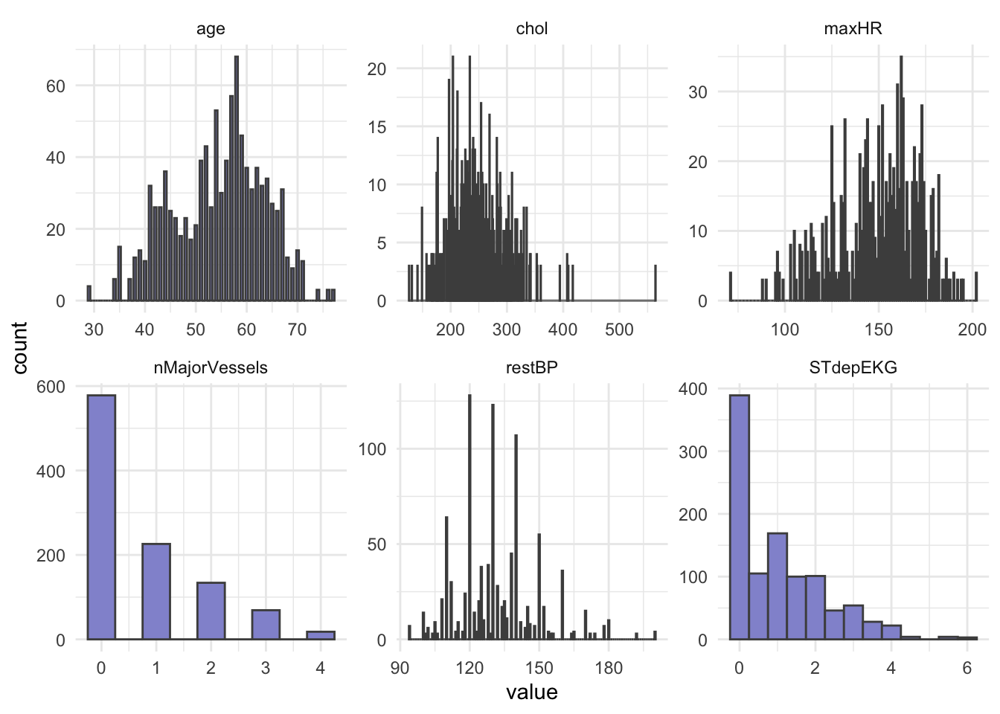
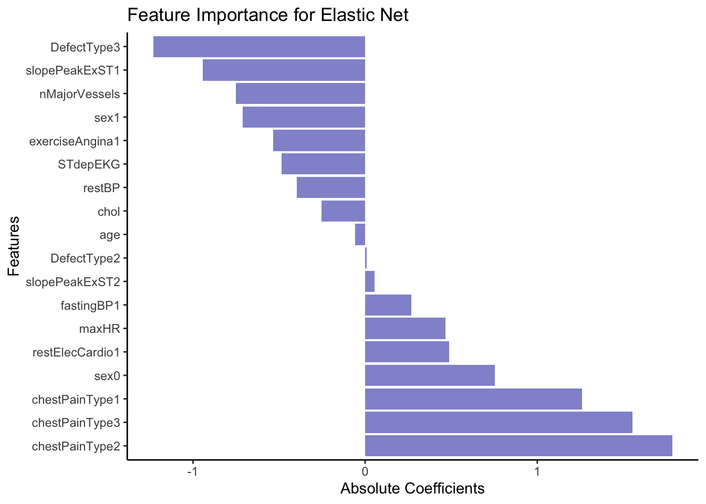

library(tidyverse)
library(caret)
library(glmnet)
library(MASS)
library(randomForest)Presentation 5B: Modelling in R
Part 1: Penalized Regression
Elastic Net regression is part of the family of penalized regressions, which also includes Ridge regression and LASSO regression. Penalized regressions are useful when dealing with many predictors, as they help eliminate less informative ones while retaining the important predictors, making them ideal for high-dimensional datasets. If you are interested in knowing more about penalized regressions, you can have a look at this excellent tutorial from Datacamp.
In linear regression, we estimate the relationship between predictors \(X\) and an outcome \(y\) using parameters \(β\), chosen to minimize the residual sum of squares (RSS). Two key properties of these \(β\) estimates are bias (the difference between the true parameter and the estimate) and variance (how much the estimates vary across different samples). While OLS (Ordinary Least Squares) gives unbiased estimates, it can suffer from high variance - especially when predictors are numerous or highly correlated — leading to poor predictions.
To address this, we can introduce regularization, which slightly biases the estimates in exchange for reduced variance and improved predictive performance. This trade-off is essential: as model complexity grows, variance increases and bias decreases, so regularization helps find a better balance between the two.

Ridge Regression = L2 penalty (adds the sum of the squares of the coefficients to the loss function). It discourages large coefficients by penalizing their squared magnitudes, shrinking them towards zero. This reduces overfitting while keeping all variables in the model.
Lasso Regression = L1 penalty (adds the sum of the absolute values of the coefficients to the loss function). This penalty encourages sparsity, causing some coefficients to become exactly zero for large \(λ\)s, thereby performing variable selection.
Elastic Net combines L1 and L2 penalties to balance variable selection and coefficient shrinkage. One of the key advantages of Elastic Net over other types of penalized regression is its ability to handle multicollinearity and situations where the number of predictors exceeds the number of observations.
Lambda, \((λ)\), controls the strength of the penalty. As \(λ\) increases, variance decreases ands bias increases, raising the key question: how much bias are we willing to accept to reduce variance?
Elastic Net regression
Load the R packages needed for analysis:
For this exercise we will use a dataset from patients with Heart Disease. Information on the columns in the dataset can be found here.
HD <- read_csv("../data/HeartDisease.csv")
head(HD)# A tibble: 6 × 14
age sex chestPainType restBP chol fastingBP restElecCardio maxHR
<dbl> <dbl> <dbl> <dbl> <dbl> <dbl> <dbl> <dbl>
1 52 1 0 125 212 0 1 168
2 53 1 0 140 203 1 0 155
3 70 1 0 145 174 0 1 125
4 61 1 0 148 203 0 1 161
5 62 0 0 138 294 1 1 106
6 58 0 0 100 248 0 0 122
# ℹ 6 more variables: exerciseAngina <dbl>, STdepEKG <dbl>,
# slopePeakExST <dbl>, nMajorVessels <dbl>, DefectType <dbl>,
# heartDisease <dbl>Firstly, let’s convert some of the variables that are encoded as numeric datatypes but should be factors:
facCols <- c("sex",
"chestPainType",
"fastingBP",
"restElecCardio",
"exerciseAngina",
"slopePeakExST",
"DefectType",
"heartDisease")
HD <- HD %>%
mutate_if(names(.) %in% facCols, as.factor)
head(HD)# A tibble: 6 × 14
age sex chestPainType restBP chol fastingBP restElecCardio maxHR
<dbl> <fct> <fct> <dbl> <dbl> <fct> <fct> <dbl>
1 52 1 0 125 212 0 1 168
2 53 1 0 140 203 1 0 155
3 70 1 0 145 174 0 1 125
4 61 1 0 148 203 0 1 161
5 62 0 0 138 294 1 1 106
6 58 0 0 100 248 0 0 122
# ℹ 6 more variables: exerciseAngina <fct>, STdepEKG <dbl>,
# slopePeakExST <fct>, nMajorVessels <dbl>, DefectType <fct>,
# heartDisease <fct>Let’s do some summary statistics to have a look at the variables we have in our dataset. Firstly, the numeric columns. We can get a quick overview of variable distributions and ranges with some histograms.
# Reshape data to long format for ggplot2
long_data <- HD %>%
dplyr::select(where(is.numeric)) %>%
pivot_longer(cols = everything(),
names_to = "variable",
values_to = "value")
head(long_data)# A tibble: 6 × 2
variable value
<chr> <dbl>
1 age 52
2 restBP 125
3 chol 212
4 maxHR 168
5 STdepEKG 1
6 nMajorVessels 2# Plot histograms for each numeric variable in one grid
ggplot(long_data,
aes(x = value)) +
geom_histogram(binwidth = 0.5, fill = "#9395D3", color ='grey30') +
facet_wrap(vars(variable), scales = "free") +
theme_minimal()
In opposition to hypothesis tests and classic linear regression, penalized regression has no assumption that predictors, nor model residuals, must be normally distributed so we do not have to test that, yeah! However, it does still assume that the relationship between predictors and the outcome is linear and that observations are independent from one another.
Importantly, penalized regression can be sensitive to large differences in the range of numeric/integer variables and it does not like missing values, so lets remove missing (if any) and scale our numeric variables.
Question: What happens to the data when it is scaled?
HD_EN <- HD %>%
drop_na(.) HD_EN <-HD %>%
mutate(across(where(is.numeric), scale))
head(HD_EN)# A tibble: 6 × 14
age[,1] sex chestPainType restBP[,1] chol[,1] fastingBP restElecCardio
<dbl> <fct> <fct> <dbl> <dbl> <fct> <fct>
1 -0.268 1 0 -0.377 -0.659 0 1
2 -0.158 1 0 0.479 -0.833 1 0
3 1.72 1 0 0.764 -1.40 0 1
4 0.724 1 0 0.936 -0.833 0 1
5 0.834 0 0 0.365 0.930 1 1
6 0.393 0 0 -1.80 0.0388 0 0
# ℹ 7 more variables: maxHR <dbl[,1]>, exerciseAngina <fct>,
# STdepEKG <dbl[,1]>, slopePeakExST <fct>, nMajorVessels <dbl[,1]>,
# DefectType <fct>, heartDisease <fct>Now, let’s check the balance of the categorical/factor variables.
HD_EN %>%
dplyr::select(where(is.factor)) %>%
pivot_longer(everything(), names_to = "Variable", values_to = "Level") %>%
count(Variable, Level, name = "Count")# A tibble: 22 × 3
Variable Level Count
<chr> <fct> <int>
1 DefectType 0 7
2 DefectType 1 64
3 DefectType 2 544
4 DefectType 3 410
5 chestPainType 0 497
6 chestPainType 1 167
7 chestPainType 2 284
8 chestPainType 3 77
9 exerciseAngina 0 680
10 exerciseAngina 1 345
# ℹ 12 more rows# OR
# cat_cols <- HD_EN %>% dplyr::select(where(is.factor)) %>% colnames()
#
# for (col in cat_cols){
# print(col)
# print(table(HD_EN[[col]]))
# }From our count table above we see that variables DefectType, chestPainType, restElecCardio, and slopePeakExST are unbalanced. Especially DefectType and restElecCardio are problematic with only 7 and 15 observations for one of the factor levels. To avoid issues when modelling, we will filter out these observations and re-level these two variables.
HD_EN <- HD_EN %>%
filter(DefectType != 0 & restElecCardio !=2) %>%
mutate(DefectType = as.factor(as.character(DefectType)),
restElecCardio = as.factor(as.character(restElecCardio)))We will use heartDisease (0 = no, 1 = yes) as the outcome.
We split our dataset into train and test set, we will keep 70% of the data in the training set and take out 30% for the test set. To keep track of our train and test samples, we will make an ID variable. Importantly, afterwards we must again ensure that all levels of each factor variable are represented in both sets.
# Add ID column
HD_EN <- HD_EN %>%
mutate(ID = paste0("W", 1:nrow(HD_EN)))
# Set seed
set.seed(123)
# Training set
train <- HD_EN %>%
sample_frac(0.70)
# Check group levels
train %>%
dplyr::select(where(is.factor)) %>%
pivot_longer(everything(), names_to = "Variable", values_to = "Level") %>%
count(Variable, Level, name = "Count")# A tibble: 20 × 3
Variable Level Count
<chr> <fct> <int>
1 DefectType 1 42
2 DefectType 2 374
3 DefectType 3 286
4 chestPainType 0 330
5 chestPainType 1 120
6 chestPainType 2 196
7 chestPainType 3 56
8 exerciseAngina 0 478
9 exerciseAngina 1 224
10 fastingBP 0 601
11 fastingBP 1 101
12 heartDisease 0 333
13 heartDisease 1 369
14 restElecCardio 0 346
15 restElecCardio 1 356
16 sex 0 209
17 sex 1 493
18 slopePeakExST 0 50
19 slopePeakExST 1 323
20 slopePeakExST 2 329# Test sett
test <- anti_join(HD_EN, train, by = 'ID')
# Check group levels
test %>%
dplyr::select(where(is.factor)) %>%
pivot_longer(everything(), names_to = "Variable", values_to = "Level") %>%
count(Variable, Level, name = "Count")# A tibble: 20 × 3
Variable Level Count
<chr> <fct> <int>
1 DefectType 1 18
2 DefectType 2 163
3 DefectType 3 120
4 chestPainType 0 151
5 chestPainType 1 47
6 chestPainType 2 82
7 chestPainType 3 21
8 exerciseAngina 0 192
9 exerciseAngina 1 109
10 fastingBP 0 253
11 fastingBP 1 48
12 heartDisease 0 150
13 heartDisease 1 151
14 restElecCardio 0 148
15 restElecCardio 1 153
16 sex 0 89
17 sex 1 212
18 slopePeakExST 0 20
19 slopePeakExST 1 144
20 slopePeakExST 2 137After dividing into train and test set, we pull out the outcome variable heartDisease into its own vector for both datasets, we name these: y_train and y_test.
y_train <- train %>%
pull(heartDisease)
y_test <- test %>%
pull(heartDisease)Next, we remove the outcome variable heartDisease from the train and test set, as well as ID as we should obviously not use this for training or testing.
train <- train %>%
dplyr::select(!c(ID, heartDisease))
test <- test %>%
dplyr::select(!c(ID, heartDisease))Another benefit of a regularized regression, such as Elastic Net, is that this type of model can accommodate a categorical or a numeric variable as outcome, and handle a mix of these types as predictors, making it super flexible.
However, if you do use categorical variables as your predictors within the glmnet() function, you need to ensure that your variables are Dummy-coded (one-hot encoded). Dummy-coding means that categorical levels are converted into binary numeric indicators. You can do this ‘manually’, but there is a super easy way to do it with model.matrix() as shown below.
Let’s create the model matrix needed for input to glmnet() and cv.glmnet() functions:
modTrain <- model.matrix(~ ., data = train)
head(modTrain) (Intercept) age sex1 chestPainType1 chestPainType2 chestPainType3
1 1 0.28282315 0 0 0 0
2 1 0.61350040 0 0 0 1
3 1 -1.37056311 1 0 1 0
4 1 -0.04785411 0 0 1 0
5 1 -0.48875711 1 0 0 0
6 1 0.83395190 1 0 1 0
restBP chol fastingBP1 restElecCardio1 maxHR exerciseAngina1
1 -0.66289286 2.0933271 0 1 0.60358256 1
2 1.04975673 -0.1162960 0 1 0.95132211 0
3 -0.09200966 -1.2792555 0 1 0.03850579 0
4 -1.34795270 0.4070358 0 0 0.77745234 0
5 0.70722681 -0.8916023 0 0 -1.00471285 1
6 -0.09200966 -0.2907399 0 1 -0.13536398 0
STdepEKG slopePeakExST1 slopePeakExST2 nMajorVessels DefectType2
1 -0.4012688 0 1 -0.7316143 1
2 -0.1459612 0 1 -0.7316143 1
3 -0.9118839 0 1 -0.7316143 1
4 -0.9118839 0 1 -0.7316143 1
5 -0.1459612 1 0 -0.7316143 0
6 0.6199615 1 0 2.1787531 0
DefectType3
1 0
2 0
3 0
4 0
5 1
6 1modTest <- model.matrix(~ ., data = test)Let’s create your Elastic Net Regression model with glmnet().
The parameter \(α\) essentially tells glmnet() whether we are performing Ridge Regression (\(α\) = 0), LASSO regression (\(α\) = 1) or Elastic Net regression (0 < \(α\) < 1 ). Furthermore, like for logistic regression we must specify if our outcome is; binominal, multinomial, gaussian, etc.
EN_model <- glmnet(modTrain, y_train, alpha = 0.5, family = "binomial")As you may recall from the first part of this presentation, penalized regressions have a hyperparameter, \(λ\), which determines the strength of shrinkage of the coefficients. We can use k-fold cross-validation to find the value of lambda that minimizes the cross-validated prediction error. For classification problems such as the one we have here the prediction error is usually binominal deviance, which is related to log-loss (a measure of how well predicted probabilities match true class labels).
Let’s use cv.glmnet() to attain the best value of the hyperparameter lambda (\(λ\)). We should remember to set a seed for reproducible results.
set.seed(123)
cv_model <- cv.glmnet(modTrain, y_train, alpha = 0.5, family = "binomial")We can plot all the values of lambda tested during cross validation by calling plot() on the output of your cv.glmnet() and we can extract the best lambda value from the cv.glmnet() model and save it as an object.
plot(cv_model)bestLambda <- cv_model$lambda.minThe plot shows how the model’s prediction error changes with different values of lambda, \(λ\). It helps to identify the largest \(λ\) we can choose before the penalty starts to hurt performance - too much shrinkage can remove important predictors, increasing prediction error.
bestLambda[1] 0.003892802log(bestLambda)[1] -5.548626Time to see how well our model performs. Let’s predict if a individual is likely to have heart disease using our model and our test set.
y_pred <- predict(EN_model, s = bestLambda, newx = modTest, type = 'class')Just like for the logistic regression model we can calculate the accuracy of the prediction by comparing it to y_test with confusionMatrix().
y_pred <- as.factor(y_pred)
caret::confusionMatrix(y_pred, y_test)Confusion Matrix and Statistics
Reference
Prediction 0 1
0 124 21
1 26 130
Accuracy : 0.8439
95% CI : (0.7978, 0.883)
No Information Rate : 0.5017
P-Value [Acc > NIR] : <2e-16
Kappa : 0.6877
Mcnemar's Test P-Value : 0.5596
Sensitivity : 0.8267
Specificity : 0.8609
Pos Pred Value : 0.8552
Neg Pred Value : 0.8333
Prevalence : 0.4983
Detection Rate : 0.4120
Detection Prevalence : 0.4817
Balanced Accuracy : 0.8438
'Positive' Class : 0
Our model performs relatively well with a Balanced Accuracy of 0.84.
Just like with linear or logistic regression, we can pull out the coefficients (weights) from our model to asses which variable(s) are the most explanatory for heart disease. We use the function coef() for this.
coeffs <- coef(EN_model, s = bestLambda)
coeffs19 x 1 sparse Matrix of class "dgCMatrix"
s1
(Intercept) 0.95882434
(Intercept) .
age -0.05655191
sex1 -1.43934620
chestPainType1 1.25864082
chestPainType2 1.78218231
chestPainType3 1.54620643
restBP -0.39618395
chol -0.25008673
fastingBP1 0.26580351
restElecCardio1 0.48972814
maxHR 0.46432403
exerciseAngina1 -0.53276269
STdepEKG -0.48792249
slopePeakExST1 -0.94223986
slopePeakExST2 0.05350876
nMajorVessels -0.75218427
DefectType2 0.01746632
DefectType3 -1.22858328First of all we see that none of our explanatory variables have been penalized so much that they have been removed, although some like age contribute very little to the model.
Let’s order the coefficients by size and plot them to get an easy overview. First we do a little data wrangling to set up the dataset.
coeffsDat <- as.data.frame(as.matrix(coeffs)) %>%
rownames_to_column(var = 'VarName') %>%
arrange(desc(s1)) %>%
filter(!str_detect(VarName,"(Intercept)")) %>%
mutate(VarName = factor(VarName, levels=VarName))Now we can make a bar plot to visualize our results.
# Plot
ggplot(coeffsDat, aes(x = VarName, y = s1)) +
geom_bar(stat = "identity", fill = "#9395D3") +
coord_flip() +
labs(title = "Feature Importance for Elastic Net",
x = "Features",
y = "Absolute Coefficients") +
theme_classic()
From the coefficients above it seem like cheat pain of any type (0 vs 1, 2 or 3) is a strong predictor of the outcome, e.g. heart disease. In opposition, having a DefectType3 significantly lowers the predicted probability of belonging to the event class (1 = Heart Disease). Specifically, it decreases the log-odds of the outcome. A large negative value like this suggests that DefectType3 is strongly associated with a lower likelihood of an event.
Part 2: Random Forest
In this section, we will train a Random Forest (RF) model using the same dataset and outcome as above. Random Forest is a simple ensemble machine learning method that builds multiple decision trees and combines their predictions to improve accuracy and robustness. By averaging the results of many trees, it reduces overfitting and increases generalization, making it particularly effective for complex, non-linear relationships. One of its key strengths is its ability to handle large datasets with many features, while also providing insights into feature importance.

Why do we want to try a RF? Unlike linear, logistic, or elastic net regression, RF does not assume a linear relationship between predictors and the outcome — it can naturally capture non-linear patterns and complex interactions between variables.
Another advantage is that RF considers one predictor at a time when splitting, making it robust to differences in variable scales and allowing it to handle categorical variables directly, without requiring dummy coding.
The downside to a is RF model is that it typically require a reasonably large sample size to perform well and can be less interpretable compared to regression-based approaches.
RF Model
Luckily, we already have a good understanding of our dataset so we won’t spend time on exploratory data analysis. We have the data loaded already:
head(HD)# A tibble: 6 × 14
age sex chestPainType restBP chol fastingBP restElecCardio maxHR
<dbl> <fct> <fct> <dbl> <dbl> <fct> <fct> <dbl>
1 52 1 0 125 212 0 1 168
2 53 1 0 140 203 1 0 155
3 70 1 0 145 174 0 1 125
4 61 1 0 148 203 0 1 161
5 62 0 0 138 294 1 1 106
6 58 0 0 100 248 0 0 122
# ℹ 6 more variables: exerciseAngina <fct>, STdepEKG <dbl>,
# slopePeakExST <fct>, nMajorVessels <dbl>, DefectType <fct>,
# heartDisease <fct>For RF there is no need to scale numeric predictors or dummy code categorical predictors However, we do need to covert the outcome variable heartDisease from binary (0 or 1) to a category name (this is required by the function we will use for random forest later).
# Mutate outcome to category and add ID column for splitting
HD_RF <- HD %>%
mutate(heartDisease = as.factor(as.character(ifelse(heartDisease == 1, "yesHD", "noHD")))) %>%
mutate(ID = paste0("W", 1:nrow(HD)))
head(HD_RF$heartDisease)[1] noHD noHD noHD noHD noHD yesHD
Levels: noHD yesHDThen, we can split our dataset into training and test. You may notice that in opposition to the elastic net regression above, we keep the outcome variable in the dataset. Weather you need to keep it in or must pull it out depends on the R-package (functions) you are using.
# Set seed
set.seed(123)
# Training set
train <- HD_RF %>%
sample_frac(0.70)
# Test set
test <- anti_join(HD_RF, train, by = 'ID')
# Remove the ID, which we do not want to use for training.
train <- train %>%
dplyr::select(-ID)
test <- test %>%
dplyr::select(-ID)Now let’s set up a Random Forest model with cross-validation - this way we do not overfit our model. The R-package caret has a very versatile function trainControl() which can be used with a range of resampling methods including bootstrapping, out-of-bag error, and leave-one-out cross-validation.
set.seed(123)
# Set up cross-validation: 5-fold CV
RFcv <- trainControl(
method = "cv",
number = 5,
classProbs = TRUE,
summaryFunction = twoClassSummary,
savePredictions = "final"
)Now that we have set up parameters for cross validation in the RFcv object above, we can feed it to the train() function from the caret packages. We also specify the training data, the name of the outcome variable, and, importantly, that we want to perform random forest (method = "rf") as the train() function can be used for different models.
# Train Random Forest
set.seed(123)
rf_model <- train(
heartDisease ~ .,
data = train,
method = "rf",
trControl = RFcv,
metric = "ROC",
tuneLength = 5
)
# Model summary
print(rf_model)Random Forest
718 samples
13 predictor
2 classes: 'noHD', 'yesHD'
No pre-processing
Resampling: Cross-Validated (5 fold)
Summary of sample sizes: 575, 574, 574, 575, 574
Resampling results across tuning parameters:
mtry ROC Sens Spec
2 0.9916503 0.9464386 0.9587900
6 0.9978648 0.9802817 0.9670852
10 0.9976344 0.9830986 0.9670852
14 0.9972088 0.9830986 0.9670852
19 0.9966214 0.9830986 0.9616058
ROC was used to select the optimal model using the largest value.
The final value used for the model was mtry = 6.Next, we can plot your model fit to see how many explanatory variables significantly contribute to our model.
# Best parameters
rf_model$bestTune mtry
2 6# Plot performance
plot(rf_model)Now, we use the test set to evaluate our model performance.
# Predict class probabilities
y_pred <- predict(rf_model, newdata = test, type = "prob")
y_pred noHD yesHD
1 0.914 0.086
2 0.980 0.020
3 0.928 0.072
4 0.922 0.078
5 0.950 0.050
6 1.000 0.000
7 0.782 0.218
8 0.998 0.002
9 0.882 0.118
10 0.038 0.962
11 0.002 0.998
12 0.014 0.986
13 0.972 0.028
14 0.006 0.994
15 0.000 1.000
16 0.126 0.874
17 0.866 0.134
18 0.950 0.050
19 0.066 0.934
20 0.982 0.018
21 0.048 0.952
22 0.918 0.082
23 0.008 0.992
24 0.912 0.088
25 0.852 0.148
26 0.916 0.084
27 0.990 0.010
28 0.976 0.024
29 0.022 0.978
30 0.706 0.294
31 0.000 1.000
32 0.026 0.974
33 0.998 0.002
34 0.206 0.794
35 0.890 0.110
36 0.002 0.998
37 0.098 0.902
38 0.076 0.924
39 0.932 0.068
40 0.942 0.058
41 0.302 0.698
42 0.996 0.004
43 1.000 0.000
44 0.024 0.976
45 0.000 1.000
46 0.066 0.934
47 0.320 0.680
48 0.730 0.270
49 0.044 0.956
50 0.044 0.956
51 0.990 0.010
52 0.002 0.998
53 0.082 0.918
54 0.022 0.978
55 0.126 0.874
56 0.076 0.924
57 0.112 0.888
58 0.010 0.990
59 0.998 0.002
60 0.084 0.916
61 0.998 0.002
62 0.054 0.946
63 0.286 0.714
64 0.006 0.994
65 0.044 0.956
66 0.060 0.940
67 0.964 0.036
68 0.022 0.978
69 0.002 0.998
70 0.000 1.000
71 0.706 0.294
72 1.000 0.000
73 0.318 0.682
74 0.960 0.040
75 1.000 0.000
76 0.006 0.994
77 0.998 0.002
78 0.988 0.012
79 0.000 1.000
80 0.942 0.058
81 0.260 0.740
82 0.000 1.000
83 0.942 0.058
84 0.036 0.964
85 0.096 0.904
86 0.912 0.088
87 0.006 0.994
88 0.034 0.966
89 0.142 0.858
90 0.976 0.024
91 0.988 0.012
92 0.474 0.526
93 0.034 0.966
94 0.024 0.976
95 0.048 0.952
96 0.984 0.016
97 0.416 0.584
98 0.002 0.998
99 0.068 0.932
100 0.996 0.004
101 0.060 0.940
102 0.902 0.098
103 0.024 0.976
104 0.000 1.000
105 0.002 0.998
106 0.014 0.986
107 0.882 0.118
108 0.202 0.798
109 0.998 0.002
110 0.064 0.936
111 0.028 0.972
112 0.016 0.984
113 0.932 0.068
114 0.958 0.042
115 0.002 0.998
116 0.992 0.008
117 0.968 0.032
118 0.898 0.102
119 0.068 0.932
120 0.026 0.974
121 0.072 0.928
122 0.980 0.020
123 0.038 0.962
124 1.000 0.000
125 0.416 0.584
126 0.072 0.928
127 0.004 0.996
128 0.036 0.964
129 0.990 0.010
130 0.984 0.016
131 0.002 0.998
132 0.008 0.992
133 0.000 1.000
134 0.990 0.010
135 0.024 0.976
136 0.076 0.924
137 0.990 0.010
138 0.000 1.000
139 0.994 0.006
140 0.868 0.132
141 1.000 0.000
142 0.084 0.916
143 0.206 0.794
144 0.036 0.964
145 0.318 0.682
146 0.230 0.770
147 0.964 0.036
148 0.008 0.992
149 0.064 0.936
150 0.002 0.998
151 0.942 0.058
152 0.142 0.858
153 1.000 0.000
154 0.956 0.044
155 0.868 0.132
156 0.980 0.020
157 0.000 1.000
158 0.928 0.072
159 0.982 0.018
160 0.882 0.118
161 0.916 0.084
162 0.286 0.714
163 0.988 0.012
164 0.012 0.988
165 0.024 0.976
166 0.014 0.986
167 0.970 0.030
168 0.230 0.770
169 0.926 0.074
170 1.000 0.000
171 0.942 0.058
172 0.000 1.000
173 0.064 0.936
174 0.976 0.024
175 0.072 0.928
176 0.002 0.998
177 1.000 0.000
178 0.868 0.132
179 0.004 0.996
180 1.000 0.000
181 0.008 0.992
182 0.006 0.994
183 1.000 0.000
184 0.962 0.038
185 0.474 0.526
186 0.938 0.062
187 0.938 0.062
188 0.978 0.022
189 0.928 0.072
190 0.942 0.058
191 0.064 0.936
192 0.964 0.036
193 1.000 0.000
194 0.002 0.998
195 0.890 0.110
196 0.854 0.146
197 0.052 0.948
198 0.000 1.000
199 0.914 0.086
200 0.024 0.976
201 0.064 0.936
202 0.060 0.940
203 0.190 0.810
204 0.998 0.002
205 0.320 0.680
206 0.962 0.038
207 0.922 0.078
208 0.000 1.000
209 0.986 0.014
210 0.002 0.998
211 0.782 0.218
212 0.998 0.002
213 0.002 0.998
214 0.994 0.006
215 0.962 0.038
216 0.004 0.996
217 0.148 0.852
218 1.000 0.000
219 0.008 0.992
220 0.474 0.526
221 0.054 0.946
222 0.016 0.984
223 0.016 0.984
224 0.932 0.068
225 0.982 0.018
226 0.014 0.986
227 0.998 0.002
228 0.982 0.018
229 0.114 0.886
230 0.048 0.952
231 0.866 0.134
232 0.026 0.974
233 0.992 0.008
234 1.000 0.000
235 0.998 0.002
236 0.994 0.006
237 0.854 0.146
238 1.000 0.000
239 0.036 0.964
240 0.730 0.270
241 0.064 0.936
242 0.302 0.698
243 0.992 0.008
244 0.014 0.986
245 0.022 0.978
246 0.002 0.998
247 0.964 0.036
248 0.026 0.974
249 0.202 0.798
250 0.148 0.852
251 0.076 0.924
252 0.988 0.012
253 0.114 0.886
254 0.230 0.770
255 0.706 0.294
256 0.980 0.020
257 0.998 0.002
258 0.976 0.024
259 0.988 0.012
260 0.026 0.974
261 0.416 0.584
262 0.852 0.148
263 0.914 0.086
264 0.060 0.940
265 0.320 0.680
266 0.040 0.960
267 0.880 0.120
268 0.084 0.916
269 0.934 0.066
270 0.988 0.012
271 0.988 0.012
272 0.782 0.218
273 0.230 0.770
274 0.854 0.146
275 0.994 0.006
276 0.004 0.996
277 0.994 0.006
278 0.004 0.996
279 0.902 0.098
280 0.978 0.022
281 1.000 0.000
282 0.014 0.986
283 0.010 0.990
284 0.954 0.046
285 0.034 0.966
286 0.190 0.810
287 0.038 0.962
288 0.974 0.026
289 0.012 0.988
290 0.034 0.966
291 0.976 0.024
292 0.318 0.682
293 0.082 0.918
294 0.032 0.968
295 0.124 0.876
296 0.956 0.044
297 0.918 0.082
298 0.006 0.994
299 0.932 0.068
300 0.260 0.740
301 0.004 0.996
302 0.054 0.946
303 0.932 0.068
304 0.922 0.078
305 1.000 0.000
306 1.000 0.000
307 0.988 0.012y_pred <- as.factor(ifelse(y_pred$yesHD > 0.5, "yesHD", "noHD"))
caret::confusionMatrix(y_pred, test$heartDisease)Confusion Matrix and Statistics
Reference
Prediction noHD yesHD
noHD 145 0
yesHD 0 162
Accuracy : 1
95% CI : (0.9881, 1)
No Information Rate : 0.5277
P-Value [Acc > NIR] : < 2.2e-16
Kappa : 1
Mcnemar's Test P-Value : NA
Sensitivity : 1.0000
Specificity : 1.0000
Pos Pred Value : 1.0000
Neg Pred Value : 1.0000
Prevalence : 0.4723
Detection Rate : 0.4723
Detection Prevalence : 0.4723
Balanced Accuracy : 1.0000
'Positive' Class : noHD
Lastly, we can extract the predictive variables with the greatest importance from your fit.
varImpOut <- varImp(rf_model)
varImpOut$importance Overall
age 70.849045
sex1 23.642161
chestPainType1 8.087142
chestPainType2 33.997946
chestPainType3 16.629339
restBP 61.528727
chol 67.870275
fastingBP1 7.750244
restElecCardio1 15.653588
restElecCardio2 0.000000
maxHR 95.828681
exerciseAngina1 58.691710
STdepEKG 76.039553
slopePeakExST1 20.352056
slopePeakExST2 33.839912
nMajorVessels 91.600454
DefectType1 3.171842
DefectType2 100.000000
DefectType3 67.485474varImportance <- as.data.frame(as.matrix(varImpOut$importance)) %>%
rownames_to_column(var = 'VarName') %>%
arrange(desc(Overall))
varImportance VarName Overall
1 DefectType2 100.000000
2 maxHR 95.828681
3 nMajorVessels 91.600454
4 STdepEKG 76.039553
5 age 70.849045
6 chol 67.870275
7 DefectType3 67.485474
8 restBP 61.528727
9 exerciseAngina1 58.691710
10 chestPainType2 33.997946
11 slopePeakExST2 33.839912
12 sex1 23.642161
13 slopePeakExST1 20.352056
14 chestPainType3 16.629339
15 restElecCardio1 15.653588
16 chestPainType1 8.087142
17 fastingBP1 7.750244
18 DefectType1 3.171842
19 restElecCardio2 0.000000Variable importance is based on how much each variable improves the model’s accuracy across splits. DefectType2 might be involved in important interaction or split the data in a very informative way early in trees.
In terms of comparing the outcome of the Random Forest model with the Elastic Net Regression, don’t expect identical top features — they reflect different model assumptions.
Use both models as complementary tools:
EN: for interpretable, linear relationships
RF: for capturing complex patterns and variable interactions
If a feature ranks high in both models, it’s a strong signal that the feature is important.
If a feature ranks high in one but not the other — explore further: interaction? non-linearity? collinearity?